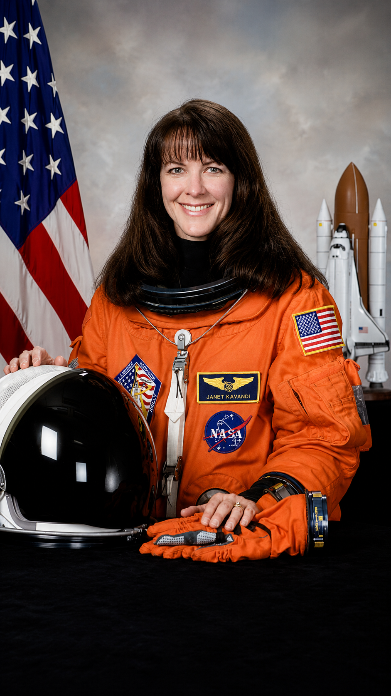
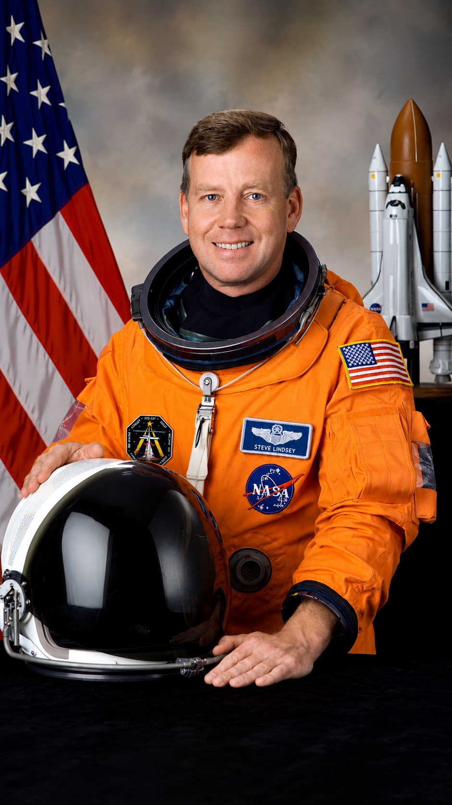
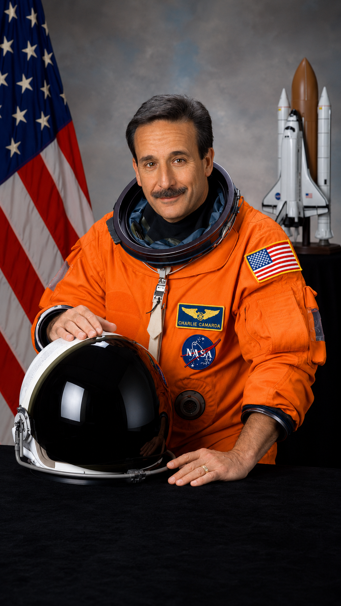
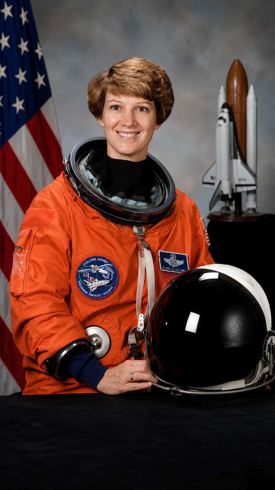
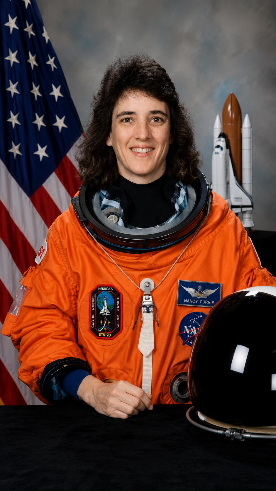

ASTRONAUTAS Y EXPLORADORES
Conocé a las personas que hicieron posible llegar tan lejos.

Janet Kavandi
Voló en tres misiones del Transbordador Espacial, acumulando más de 33 días en el espacio.

Steve Lindsey
Fue comandante de cinco misiones del Transbordador Espacial, participando en el ensamblaje y abastecimiento de la Estación Espacial Internacional.

David Brown
Formó parte de la misión STS-107 del Columbia, donde realizó experimentos científicos en microgravedad.

Charlie Camarda
Voló en la misión STS-114, el primer vuelo del Transbordador tras el accidente del Columbia, ayudando a probar nuevas medidas de seguridad.

Eileen Collins
Hizo historia al convertirse en la primera mujer en comandar una misión del Transbordador Espacial.

Nancy Currie
Participó en cuatro misiones espaciales y fue especialista en operaciones con el brazo robótico del transbordador.

Ilan Ramon
Fue el primer astronauta de Israel y viajó en la misión STS-107 del Columbia realizando experimentos científicos.

Lisa Nowak
Voló en la misión STS-121 hacia la Estación Espacial Internacional, participando en tareas de logística y mantenimiento.
Janet Kavandi
Voló en tres misiones del Transbordador Espacial, acumulando más de 33 días en el espacio y luego ocupó cargos de liderazgo en la NASA.
Steve Lindsey
Fue comandante de cinco misiones del Transbordador Espacial, participando en el ensamblaje y abastecimiento de la Estación Espacial Internacional.
David Brown
Formó parte de la misión STS-107 del Columbia, donde realizó experimentos científicos en microgravedad.